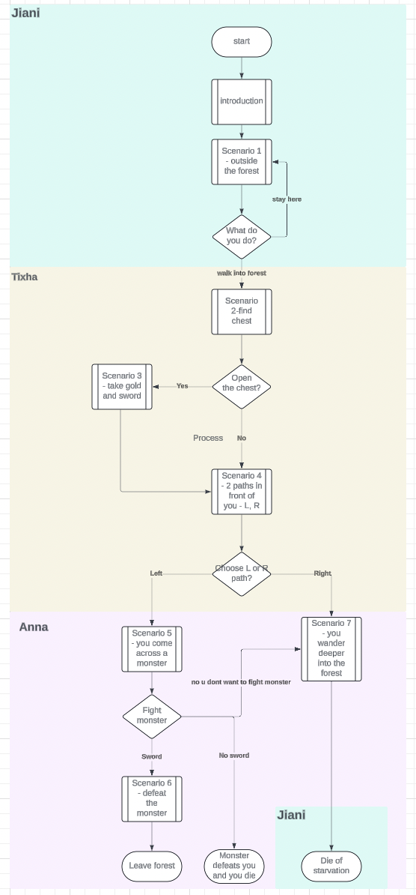
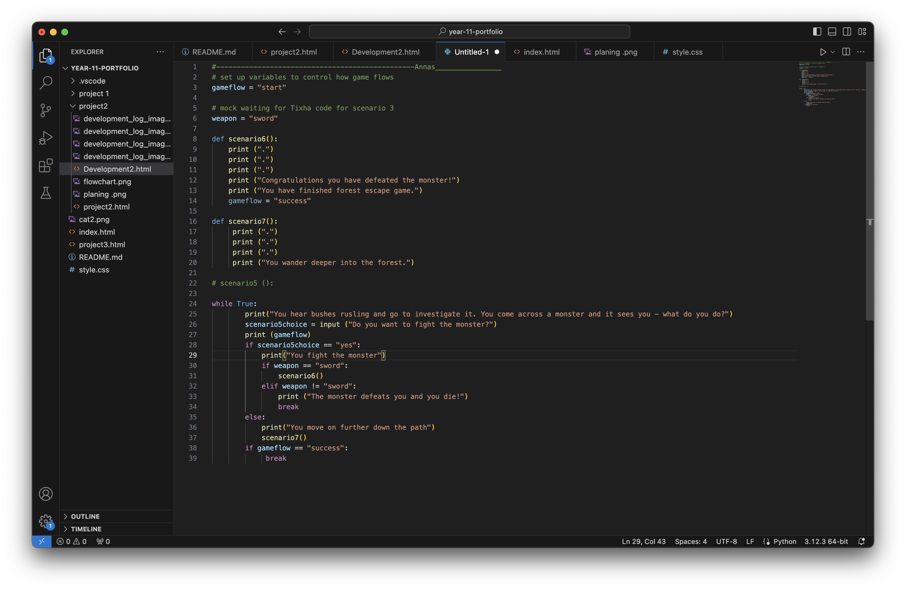
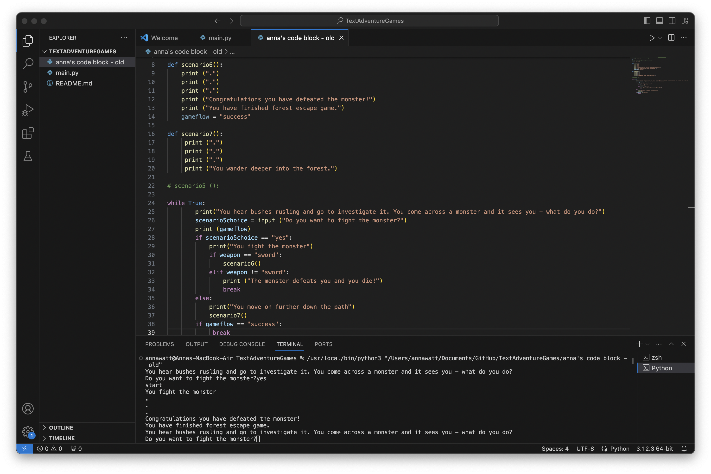
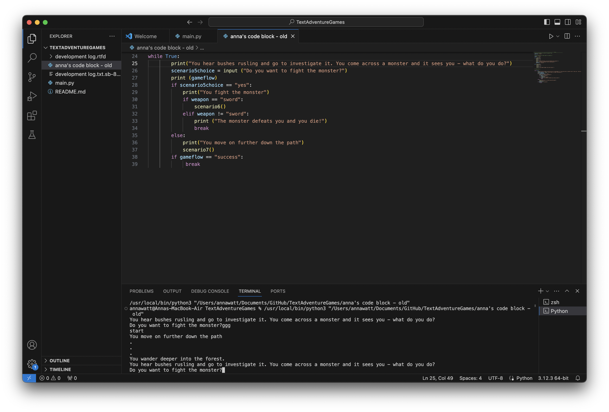
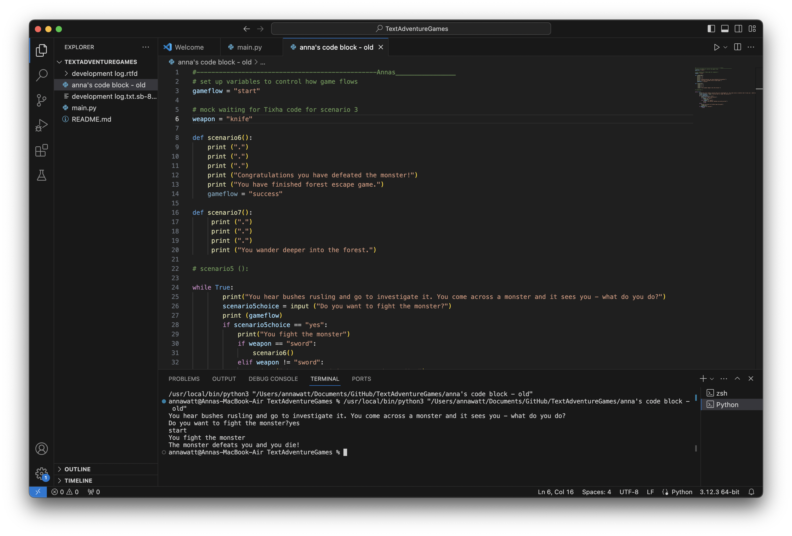
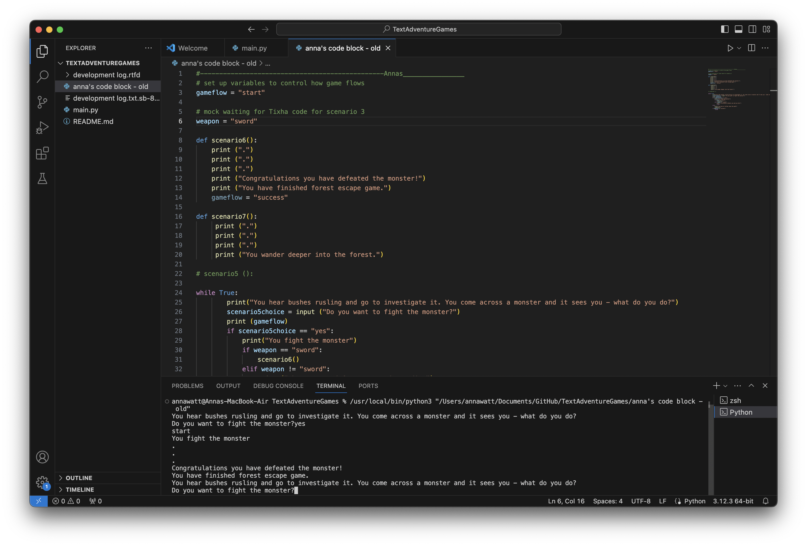

I planned the code by creating a flowchart in LucidChart. I used the 'literate modelling' approach by discussing with my team the game flow, using the flow to decide what functions to code, and then using colours to assign work my the other team mates so that everyone could understand what they needed to do and how it was part of the overall game.

Literate modeling is a way to draw up in a model what you're planning to build, and making it really easy to understand by using colours, labels, names and so on so everyone can see at a glance what they should be doing.Each team member then created the scenarios they had been assigned in the model.
I wrote my part of the code to fight the monster and either be killed or leave the forest down another path. My code used two variables to mock the code from my team members because it wasn't ready in time. I used a while true loop to handle checking whether there was a sword to fight with, and options for the user to choose to fight or not.
| Test/Input | Expectation | Output |
|---|---|---|
| Yes | User fights the monster |  |
| Any other input | User avoids the monster and goes further down the path |  |
The game wouldn't allow to defeat the monster as there was no code to test if the user had weapons, and it didn't match the flow in Lucidchart.
I introduced the 'Sword' variable which mocked Tixsha's code, then added check for if the user had the sword and so they could kill the monster.
| Test/Input | Expectation | Output |
|---|---|---|
| Knife | Check if user does not have a sword so can they defeat the monster and they will die. |  |
| Sword | Check if user has a sword and if they do, they defeat the monster. |  |
Q. What did you think of the game?
"The game flow worked well and I could see results from my selections, and I could complete the game. Good job."